Recorrido visual del temario
Los temas en orden, de T1 a T6. En cada uno, los dibujos y animaciones que mejor explican lo que pide el examen.
T1 · Sistemas controlados
Qué es un escalón, cuánto tarda la respuesta y cuánto error queda.
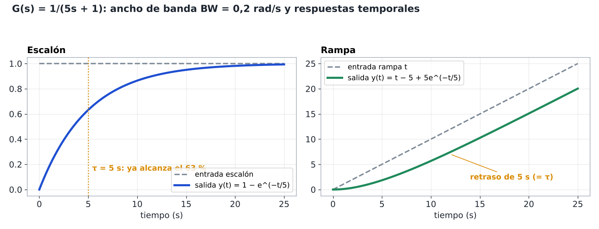
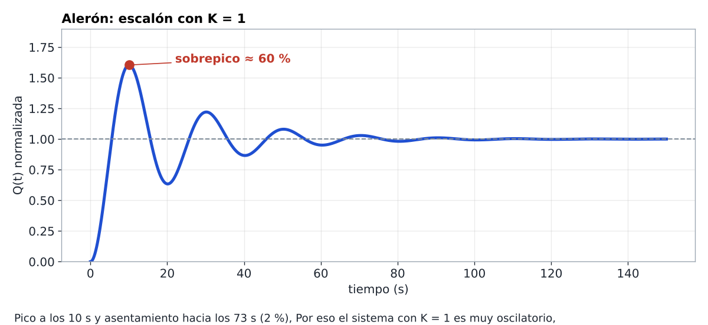
T2 · Controlador PID
Qué hace cada acción: P, I y D.
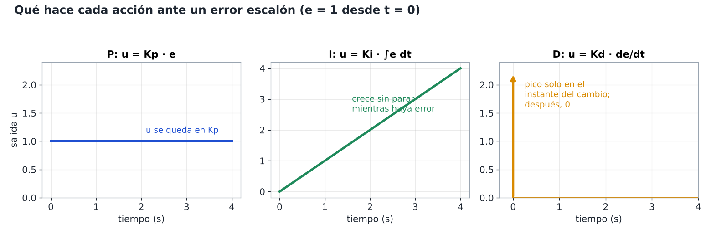
T3 · Sintonía del PID
Ziegler–Nichols y asignación de polos.
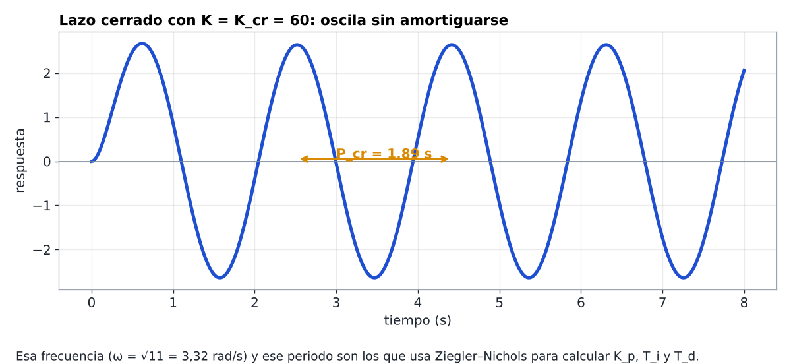
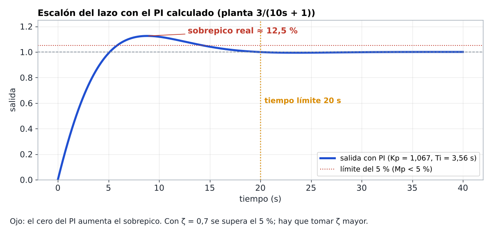
T4 · Estructuras de control
Feedforward, cascada, ratio y multivariable.
Todavía no hay dibujos de este tema. Las explicaciones están en la página PID, en el apartado de estructuras.
T5 · Respuesta en frecuencia
Bode, Nyquist, márgenes y resonancia.
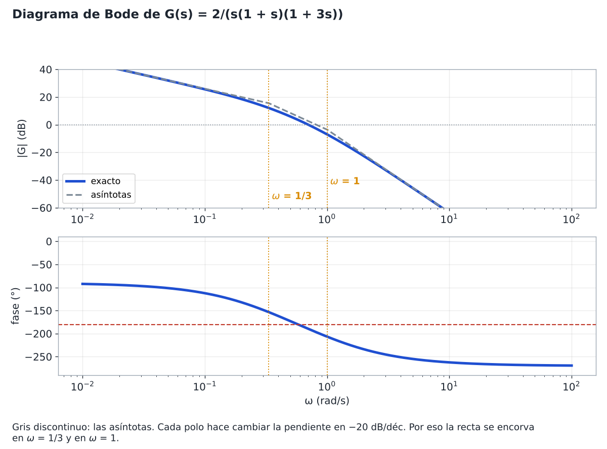
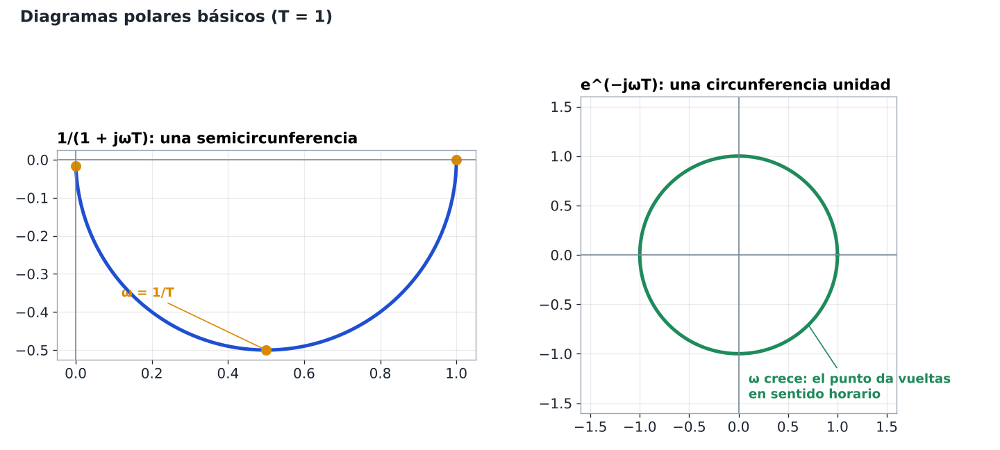
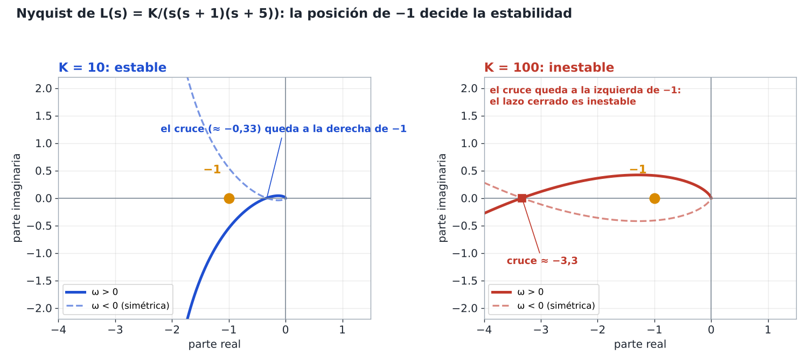
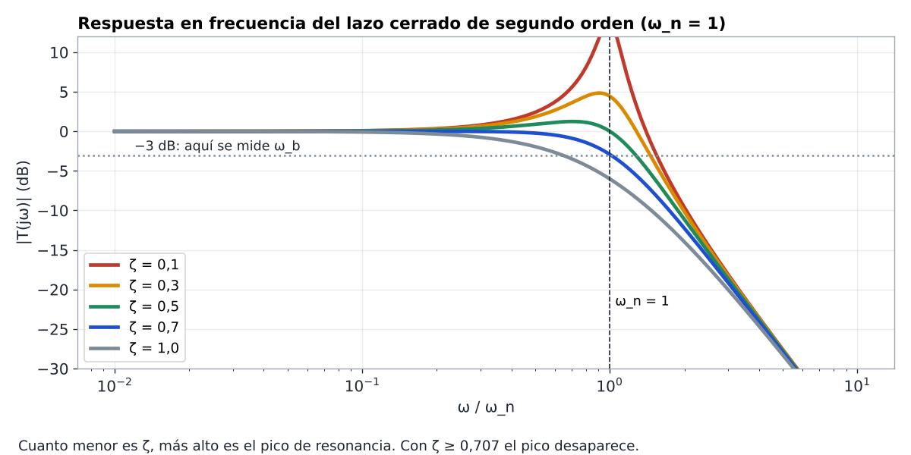
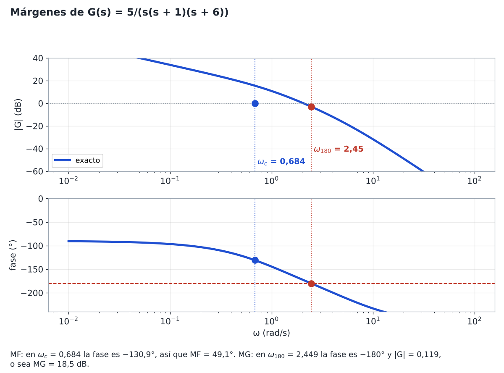
T6 · Diseño en frecuencia
Compensadores de adelanto, atraso y cómo se eligen.
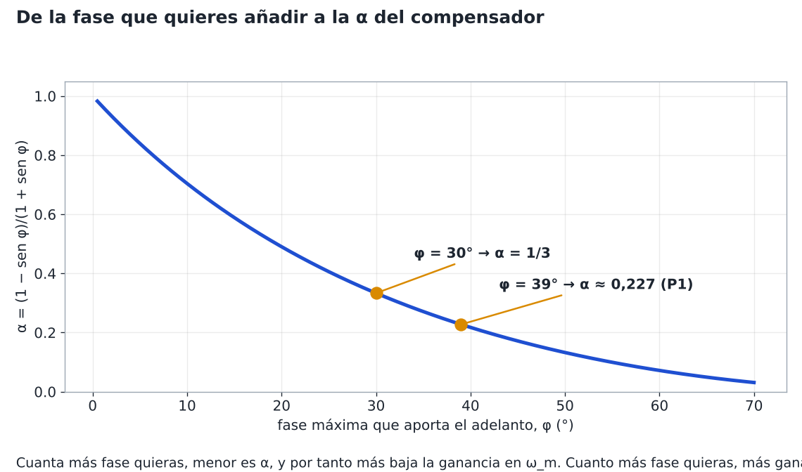
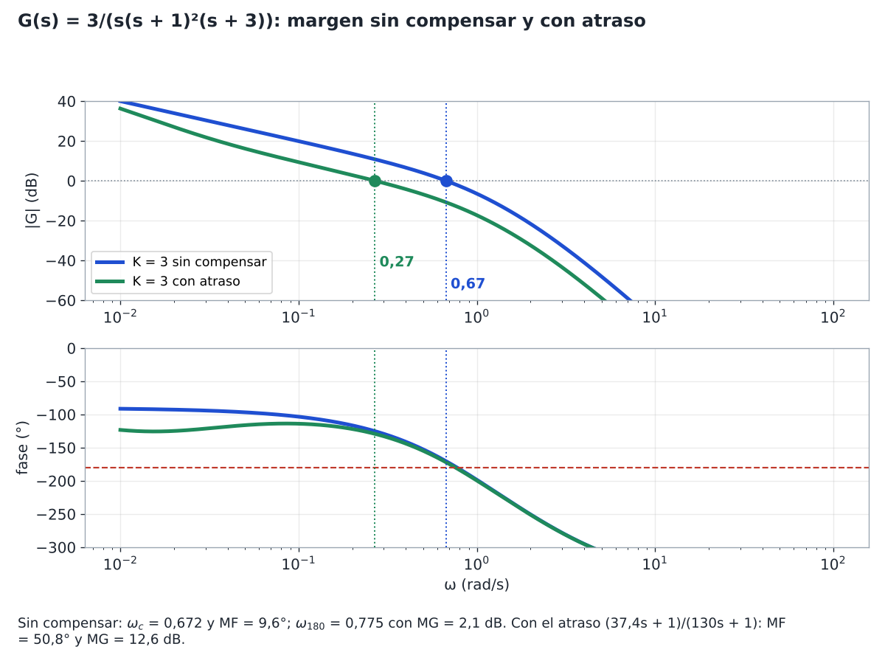
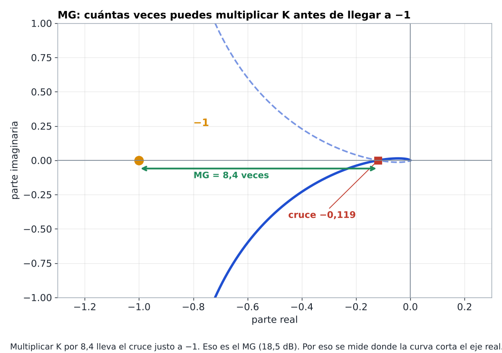
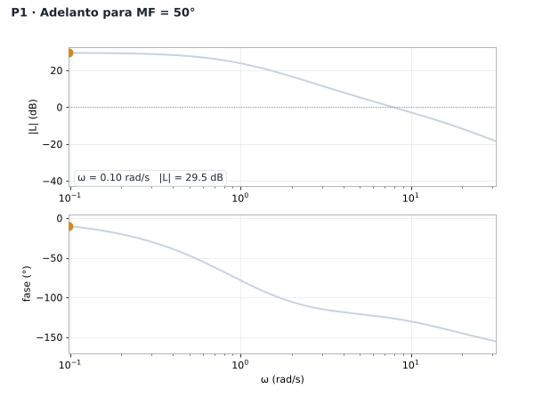
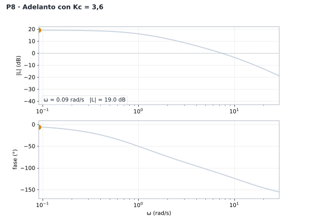